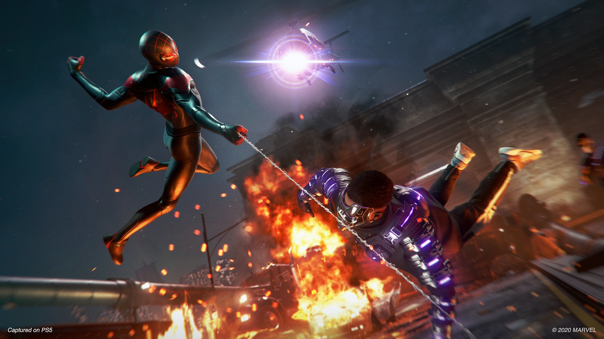

- Lista de outros jogos sobre Homem-Aranha no playstation:
- Spider-Man
- Spider-Man 2
- Spider-Man: Game of the Year Edition
- Spider-Man Remastered

LOGO
Spider-Man: Miles Morales é um jogo eletrônico de ação-aventura desenvolvido pela Insomniac Games e publicado pela Sony Interactive Entertainment para o PlayStation 4 e PlayStation 5. É baseado nos personagens, mitologia e adaptações em outras mídias dos personagens de histórias em quadrinhos Miles Morales e Homem-Aranha da Marvel Comics, tendo sido lançado para PlayStation 4 e como um título de lançamento do PlayStation 5 em novembro de 2020.
Sistema Operacional - Windows 10 de 64 bits
Processador - Intel Core i3-4160 de 3,6 GHz ou AMD equivalente
Memória - 8 GB de Ram
Armazenamento - 75 GB de espaço disponível no HD
Placa de vídeo - NVIDIA GTX 950 ou AMD Radeon RX 470
Sistema Operacional - Windows 10 de 64 bits
Processador - Intel Core i5-4670 de 3,4 GHz ou AMD Ryzen 5 1600 de 3,2 GHz
Memória - 16 GB de RAM
Armazenamento - 75 GB de espaço disponível no SSD
Placa de vídeo - NVIDIA GTX 1060 de 6 GB ou AMD Radeon RX 580 de 8 GB
As avaliações para este jogo são muito positivas, com nota 85 no metacritics e com alguns prêmios:
- 4 Melhor jogo de PlayStation 5 de 2020
- 3 jogo de PlayStation 5 mais discutido de 2020